本文重点讲述JumpServer开源堡垒机的用户、角色、系统用户与资产之间的关系，分享如何快速健全JumpServer的用户体系，实现用户权限的划分，帮助企业快速实现从无到有的JumpServer用户及权限体系建设。
JumpServer开源堡垒机采用RBAC（Role-Based Access Control，基于角色的访问控制）权限管理模型。通过角色定义权限，并进一步关联用户的方式间接赋予用户权限。权限指代具体的操作，它与角色和用户之间犹如从点到线，再到面的关系。
概括地说，权限定义了软件中整个用户体系的操作行为，而角色是在现实世界中对权限的抽象，是一组特定操作行为的集合。软件又进一步通过角色与用户的绑定关系，约定了用户所具有的操作权限，并由此形成了灵活的映射机制。通过“权限-角色-用户”这样的RBAC模型，JumpServer支持了用户权限体系建设中的“最小化原则”，实现了精细化权限控制与灵活赋权之间的管理平衡。
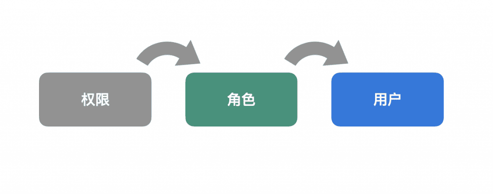
一、用户和角色的关系
在创建用户和划分角色时，一定要权衡用户和角色之间的关系，遵循权限最小化原则，这样才能防患于未然，规避生产环境中的运维风险。
JumpServer支持RBAC用户管理模型，通过自定义角色权限，对用户授予某个角色，从而控制用户的权限，实现用户和权限的逻辑分离（区别于ACL，即访问控制列表Access Control Lists模型），极大地方便了权限的管理。
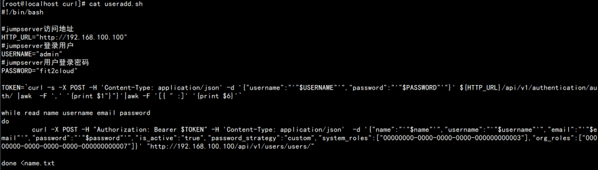
二、创建用户及角色划分
对于一些初次使用JumpServer开源堡垒机的用户而言，用户的创建更多的是依赖手动创建的方式。这种方式效率比较低下，而且维护成本较高。因此，在这里推荐几种快速批量创建用户的方法，以提高运维工作的效率。
1. 创建用户
■ 模板批量创建用户
JumpServer开源堡垒机支持批量创建用户，系统提供创建用户的模板，在下载的模板中填写用户的信息即可完成用户的批量创建。
在批量创建用户时，用户密码的设置有两种方法：
方法一：如果在创建用户时需要自定义密码，在导出模板的“密码策略”字段下，填写“custom”，然后在密码字段下填写用户密码即可；
具体操作步骤如下：
第一步：选择“用户管理”→“用户列表”，点击“导入”按钮，下载创建模板（CSV或者XLSX格式）；
第二步：在下载的模板中填写用户信息，然后点击“导入”按钮，选择创建好的模板即可完成用户创建。
方法二：可以在导入用户模板前（用户信息必须填写真实的用户邮箱地址）配置好公司邮箱，在创建好用户后，用户自行点击“生成重置密码链接”，由用户自行设置密码。
具体操作步骤如下：
第一步：用户自定义密码时，选择“设置”→“邮箱设置”，配置好邮箱；
第二步：在创建好用户后，用户自行点击“点击这里设置密码”链接，由用户自行设置密码，然后在导出的模板中填写相应的信息完成导入即可。
■ 接口批量创建用户
JumpServer本身提供标准的API接口，用户可以通过API接口批量创建用户，创建用户接口：http://堡垒机访问地址:端口/api/v1/users/users/。
注意：执行POST请求调用上述API接口，请求的body参数可以参考：http://堡垒机访问地址:端口/api/docs进行查看。
■ Shell脚本批量创建用户
第一步：编辑创建用户信息，依次为用户名称、用户名、邮箱、密码；
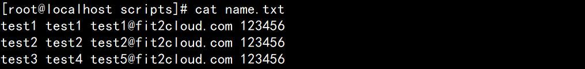
第二步：编写创建用户脚本，修改脚本中jumpserver访问地址、jumpserver登录用户、jumpserver用户登录密码（以实际为准），编写完成执行脚本即可。
脚本如下：
#!/bin/bash
#jumpserver访问地址
HTTP_URL="http://192.168.100.100"
#jumpserver登录用户
USERNAME="admin"
#jumpserver用户登录密码
PASSWORD="fit2cloud"
TOKEN=`curl -s -X POST -H 'Content-Type: application/json' -d '{"username":"'"$USERNAME"'","password":"'"$PASSWORD"'"}' ${HTTP_URL}/api/v1/authentication/auth/ |awk -F ',' '{print $1"}"}'|awk -F '[{ " :]' '{print $6}'`
while read name username email password
do
curl -X POST -H "Authorization: Bearer $TOKEN" -H 'Content-Type: application/json' -d '{"name":"'"$name"'","username":"'"$username"'","email":"'"$email"'","password":"'"$password"'","is_active":"true","password_strategy":"custom","system_roles":["00000000-0000-0000-0000-000000000003"],"org_roles":["00000000-0000-0000-0000-000000000007"]}' ${HTTP_URL}/api/v1/users/users/
done <name.txt注意：如果是自定义的角色，自行修改脚本中对应的system_roles和org_roles的id即可。
2. 角色关系及角色划分
创建用户时默认为普通用户，当然在创建用户时也可以指定用户角色。JumpServer默认自带系统管理员、系统审计员、用户等多种角色，每一种角色关联的权限也不一样。作为管理员，可以根据实际需求自定义用户角色，并对用户角色权限进行自定义编辑。
普通用户：普通用户拥有正常操作和资产登录的权限，但不能对配置进行修改；
审计员：审计员可以查看当前用户的操作行为、用户权限、用户信息、文件传输记录、用户操作日志等信息。当用户触发危险命令时，作为审计员可以对用户操作进⾏实时监控，发现违规操作，⽴即中止用户操作行为；
管理员：管理员是指拥有堡垒机所有权限的用户。作为管理员需要完成工单的审批、用户授权申请、用户权限变更、用户锁定等行为操作，同时针对员工职位的变化对员工的角色和权限做出相应的权限变更。
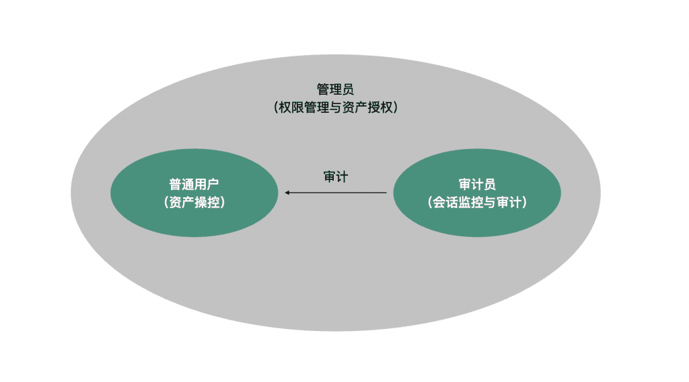
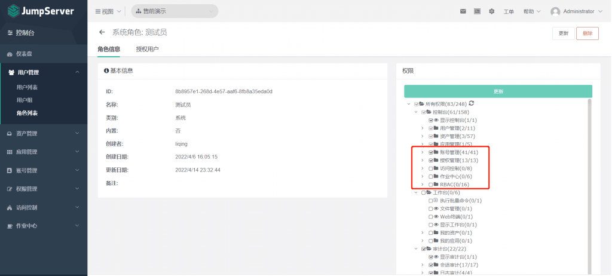
三、用户、系统用户和资产之间的关系
在JumpServer中，用户对资产的操作权限是由授权规则中授权的系统用户决定的。一般会通过系统用户来实现业务权限的区分，分为可读系统用户、可写系统用户和最高权限系统用户三大类。
然后，根据用户的角色和需求来授权相对应的系统用户。用户可以通过授权的系统用户登录授权的资产，其关系如下：
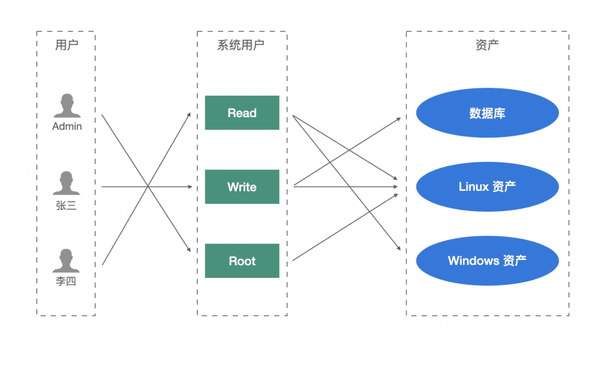
四、系统用户权限划分
系统用户的权限也是至关重要的，其往往决定了用户对于服务器的实际操作权限。以下方法对系统用户权限的划分提供了两种思路：
方法一：白名单——拒绝所有，开放某些命令；
第一步：选择“资产管理”→“命令过滤”，创建命令过滤规则；
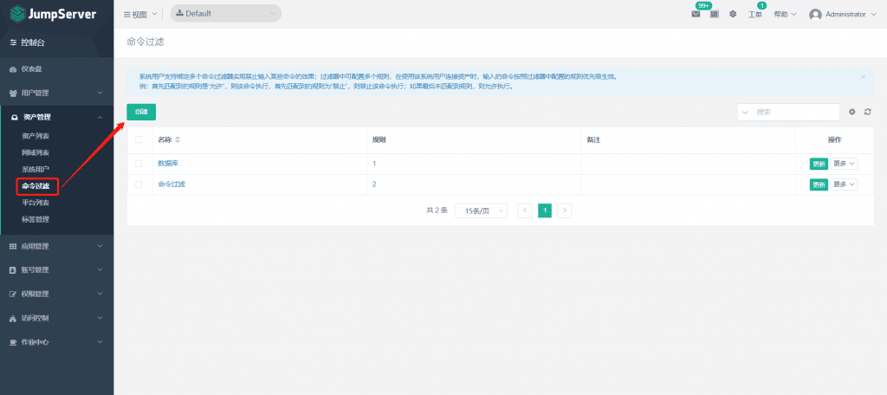
第二步：编辑命令过滤规则，拒绝所有命令，在“正则表达式”内容里面填写 .* 参数；
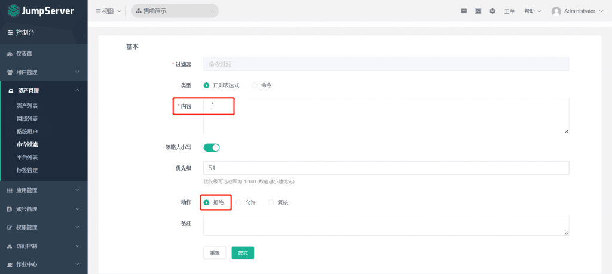
第三步：允许某些可执行的命令，继续添加第二条命令过滤规则，其优先级一定要小于第一条命令过滤规则的优先级。
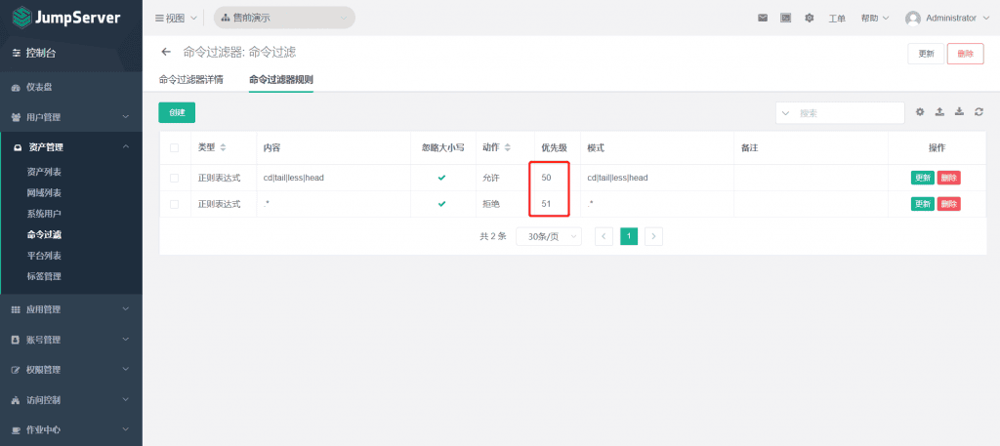
方法二：黑名单——允许所有，拒绝某些命令。
第一步：选择“资产管理”→“命令过滤”，创建命令过滤规则；
第二步：点击命令过滤规则的名称，然后点击“创建”，添加需要禁用的命令；
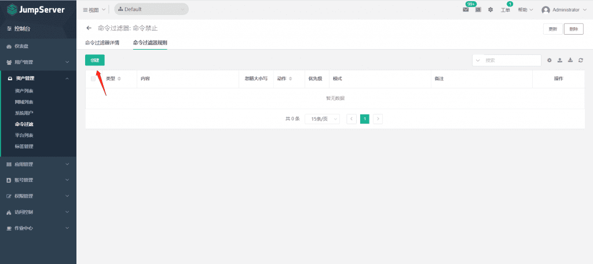
第三步：直接添加需要禁用的命令即可，其他命令默认都允许，可以通过正则添加或者使用“|”符号来分隔多条命令。
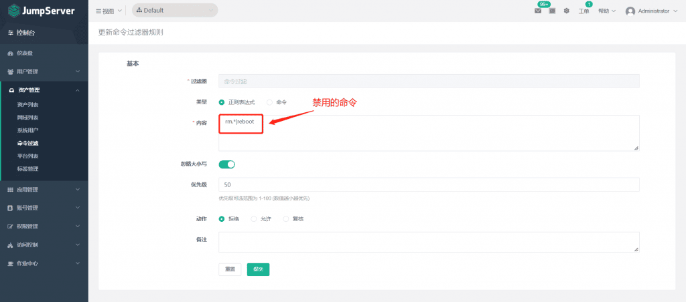
五、总结
良好的用户权限体系是JumpServer开源堡垒机在企业最佳实践中的重要保障。作为管理员，我们需要对开发、测试、运维等人员的权限做好规划，统筹大局，搭建一套完整的用户权限体系。权限的灵活运用能够为企业IT系统的安全运维保驾护航。